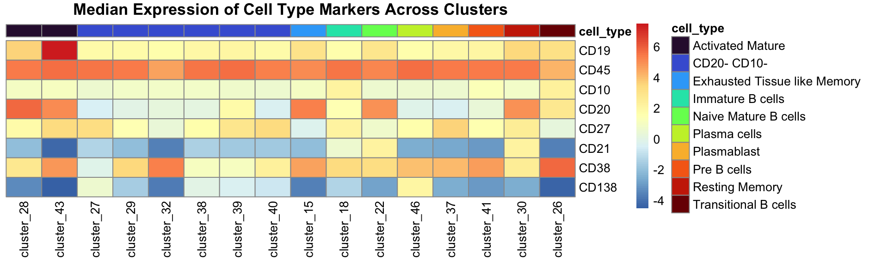

Supercells Combined with Clustering Can Identify Rare B Cell Subsets
Givanna Putri
2023-05-24
Last updated: 2023-07-28
Checks: 7 0
Knit directory: SuperCellCyto-analysis/
This reproducible R Markdown analysis was created with workflowr (version 1.7.0). The Checks tab describes the reproducibility checks that were applied when the results were created. The Past versions tab lists the development history.
Great! Since the R Markdown file has been committed to the Git repository, you know the exact version of the code that produced these results.
Great job! The global environment was empty. Objects defined in the global environment can affect the analysis in your R Markdown file in unknown ways. For reproduciblity it’s best to always run the code in an empty environment.
The command set.seed(42) was run prior to running the
code in the R Markdown file. Setting a seed ensures that any results
that rely on randomness, e.g. subsampling or permutations, are
reproducible.
Great job! Recording the operating system, R version, and package versions is critical for reproducibility.
Nice! There were no cached chunks for this analysis, so you can be confident that you successfully produced the results during this run.
Great job! Using relative paths to the files within your workflowr project makes it easier to run your code on other machines.
Great! You are using Git for version control. Tracking code development and connecting the code version to the results is critical for reproducibility.
The results in this page were generated with repository version 402358b. See the Past versions tab to see a history of the changes made to the R Markdown and HTML files.
Note that you need to be careful to ensure that all relevant files for
the analysis have been committed to Git prior to generating the results
(you can use wflow_publish or
wflow_git_commit). workflowr only checks the R Markdown
file, but you know if there are other scripts or data files that it
depends on. Below is the status of the Git repository when the results
were generated:
Ignored files:
Ignored: .DS_Store
Ignored: .Rproj.user/
Ignored: code/.DS_Store
Ignored: data/.DS_Store
Ignored: data/bodenmiller_cytof/
Ignored: data/explore_supercell_purity_clustering/
Ignored: data/haas_bm/
Ignored: data/oetjen_bm_dataset/
Ignored: data/trussart_cytofruv/
Ignored: output/.DS_Store
Ignored: output/bodenmiller_cytof/
Ignored: output/explore_supercell_purity_clustering/
Ignored: output/label_transfer/
Ignored: output/oetjen_b_cell_panel/
Ignored: output/trussart_cytofruv/
Untracked files:
Untracked: README.html
Untracked: analysis/ref.bib
Untracked: code/README.html
Untracked: code/b_cell_identification/
Untracked: code/batch_correction/
Untracked: code/bodenmiller_data/
Untracked: code/explore_supercell_purity_clustering/
Untracked: code/label_transfer/
Untracked: data/README.html
Untracked: output/README.html
Unstaged changes:
Modified: .gitignore
Modified: README.md
Modified: _workflowr.yml
Modified: analysis/_site.yml
Modified: code/README.md
Modified: data/README.md
Modified: output/README.md
Note that any generated files, e.g. HTML, png, CSS, etc., are not included in this status report because it is ok for generated content to have uncommitted changes.
These are the previous versions of the repository in which changes were
made to the R Markdown
(analysis/b_cells_identification.Rmd) and HTML
(docs/b_cells_identification.html) files. If you’ve
configured a remote Git repository (see ?wflow_git_remote),
click on the hyperlinks in the table below to view the files as they
were in that past version.
| File | Version | Author | Date | Message |
|---|---|---|---|---|
| Rmd | 402358b | Givanna Putri | 2023-07-28 | wflow_publish(c("analysis/*Rmd")) |
Introduction
In this analysis, we seek to verify whether we can faithfully replicate the traditional clustering and annotation process, and identify rare cell populations at the supercell level
The flow cytometry data set we employed were the large flow cytometry dataset profiling more than 8 million B cells in healthy human bone marrow samples (Oetjen et al. 2018).
The annotation for the dataset were not publicly available. However, the authors have provided the following gating strategy within the manuscript’s supplementary material (Oetjen et al. 2018), which can be employed to discern B cells within the data:
- Pre-B cell (CD20-): CD45+ CD19+ CD20- CD10+
- Immature B cells (CD20+): CD45+ CD19+ CD20+ CD10+
- Transitional B cells: CD45+ CD19+ CD20+ CD10+ CD27-
- Mature B cells: CD45+ CD19+ CD20+ CD10-
- Naïve Mature B cells: CD45+ CD19+ CD20+ CD10- CD27- CD21hi
- Exhausted/Tissue-like Memory: CD45+ CD19+ CD20+ CD10- CD27- CD21lo
- Memory B cells: CD45+ CD19+ CD20+ CD10- CD27+
- Activated Mature: CD45+ CD19+ CD20+ CD10- CD27+ CD21lo
- Resting Memory: CD45+ CD19+ CD20+ CD10- CD27+ CD21hi
- CD20- CD10-: CD45+ CD19+ CD20- CD10-
- Plasmablast: CD45+ CD19+ CD20- CD10- CD27+ CD38+
- Plasma Cell: CD45+ CD19+ CD20- CD10- CD27+ CD38+ CD138+
- Plasmablast: CD45+ CD19+ CD20- CD10- CD27+ CD38+
The B cell panel consists of 13 markers, namely:
- CD80
- Live/Dead
- CD27
- CD19
- CD45
- CD10
- CD138
- PD-1
- CD20
- CD38
- CD86
- CD21
- CD40
The process employed in this study comprises the following steps: FCS files were initially downloaded from the FlowRepository website FR-FCM-ZYQ9.
Single live cells were isolated through manual gating using
CytoExplorer (Hammill 2021) (the relevant
code can be found in
code/b_cell_identification/gate_flow_data.R). The following
single live cells were retained.
knitr::include_graphics("assets/oetjen_bcell_single_live_cells.png", error = FALSE)
Subsequently, the markers were transformed using the arcsinh transformation with a co-factor of 150. This was followed by the application of SuperCellCyto, which produced a set of supercells. These supercells were clustered using Louvain clustering with k parameter set to 3.
All code used to execute these procedures can be found in
code/oetjen_bm_data/cluster_run_supercell.R.
Load libraries
library(scales)
library(SingleCellExperiment)
library(ggforce)
library(here)
library(data.table)
library(cowplot)
library(Spectre)
library(ggplot2)
library(viridis)
library(bluster)
library(pheatmap)
library(ggridges)Load data
root_dir <- here("output", "oetjen_b_cell_panel", "20230511")
supercell_mat <- fread(here(root_dir, "supercellExpMat_clust_umap.csv"))
markers <- names(supercell_mat)[1:12]
cell_type_markers <- paste0(
c("CD19", "CD45", "CD10", "CD20", "CD27", "CD21", "CD38", "CD138"),
"_asinh_cf150"
)Identify B cells
Use pheatmap annotate the clusters.
supercell_mat_forHeatmap <- supercell_mat[, c("louvain_k3", cell_type_markers), with = FALSE]
supercell_mat_forHeatmap <- supercell_mat_forHeatmap[order(louvain_k3)]
supercell_mat_forHeatmap[, cluster := paste0("cluster_", louvain_k3)]
supercell_mat_forHeatmap[, louvain_k3 := NULL]
median_exp <- supercell_mat_forHeatmap[, lapply(.SD, median), by = cluster, .SDcols = cell_type_markers]
median_exp_mat <- as.matrix(median_exp[, cell_type_markers, with = FALSE])
row.names(median_exp_mat) <- median_exp$cluster
colnames(median_exp_mat) <- gsub("_asinh_cf150", "", colnames(median_exp_mat))
pheatmap(
median_exp_mat,
cluster_cols = FALSE,
cluster_rows = FALSE,
display_numbers = TRUE,
number_format = "%.2f",
scale = "column",
main = "Median Expression of Cell Type Markers Across Clusters"
)Using the heatmap, we derive the following cell type annotations.
annotation <- rep("Unknown", 46)
annotation[41] <- "Pre B cells"
annotation[18] <- "Immature B cells"
annotation[26] <- "Transitional B cells"
annotation[c(27, 29, 32, 38, 39, 40)] <- "CD20- CD10-"
annotation[37] <- "Plasmablast"
annotation[46] <- "Plasma cells"
annotation[22] <- "Naive Mature B cells"
annotation[15] <- "Exhausted Tissue like Memory"
annotation[30] <- "Resting Memory"
annotation[c(28, 43)] <- "Activated Mature"
annotation_df <- data.table(cluster = paste0("cluster_", seq(1, 46)), cell_type = annotation)Create the heatmap which show median expression and also the annotation for each cluster.
# The order is for ordering the heatmap so the same cell types are together
heatmap_annot_col <- annotation_df[order(cell_type)]
heatmap_annot_col <- heatmap_annot_col[cell_type != "Unknown"]
heatmap_annot_col <- data.frame(heatmap_annot_col, row.names = "cluster")
annot_cell_types <- unique(heatmap_annot_col$cell_type)
annot_colours <- viridis(n = length(annot_cell_types), option = "turbo")
names(annot_colours) <- annot_cell_types
# Re-order heatmap to match annotation so the same cell types are together
median_exp_mat_noUnassigned <- median_exp_mat[rownames(heatmap_annot_col), ]
pheatmap(
t(median_exp_mat_noUnassigned),
cluster_cols = FALSE,
cluster_rows = FALSE,
annotation_col = heatmap_annot_col,
scale = "column",
main = "Median Expression of Cell Type Markers Across Clusters",
annotation_colors = list(cell_type = annot_colours),
angle_col = 90
)
We then embed them to the supercell matrix.
supercell_mat_annot <- supercell_mat
supercell_mat_annot[, cluster := paste0("cluster_", louvain_k3)]
supercell_mat_annot <- merge.data.table(
x = supercell_mat,
y = annotation_df,
by = "cluster"
)Following this, we generate the UMAP plot reflecting these
annotations. The UMAP coordinates were generated using the Spectre
package. The code to generate the UMAP coordinates is available on
code/oetjen_bm_data/cluster_run_supercell.R.
cell_types <- sort(unique(supercell_mat_annot$cell_type))
colour_scheme <- viridis(n = length(cell_types) - 1, option = "turbo")
names(colour_scheme) <- cell_types[c(1:length(cell_types) - 1)]
colour_scheme["Unknown"] <- "#D3D3D3"
# So unknown is at the bottom.
supercell_mat_annot[, cell_type := factor(cell_type, levels = cell_types)]
ggplot(supercell_mat_annot, aes(x = UMAP_X, y = UMAP_Y, colour = cell_type)) +
geom_point(size = 0.2) +
theme_classic() +
guides(colour = guide_legend(override.aes = list(size = 5))) +
scale_colour_manual(values = colour_scheme) +
labs(colour = "Cell type")To be more sure that our cell type annotation is reasonable, we shall expand our annotated supercells to the single cell level and visualise the distribution of their marker expression. We will exclude those we assigned “unknown” label.
Remove unassigned for heatmap.
supercell_mat_annot_noUnassigned <- supercell_mat_annot[cell_type != "Unknown"]Check the distribution of the marker expression of the single cells expanded from the annotated supercells.
cell_mat <- fread(here(
"output", "oetjen_b_cell_panel", "20230404_cytoexplorer_gating",
"cell_dat_asinh.csv"
))
cell_map_full <- fread(here(
"output", "oetjen_b_cell_panel", "20230511",
"supercellCellMap.csv"
))
cell_map <- merge.data.table(
x = cell_map_full,
y = supercell_mat_annot_noUnassigned[, c("SuperCellId", "cell_type")],
by.x = "SuperCellID",
by.y = "SuperCellId"
)
cell_map <- cell_map[cell_type != "Unknown", ]
cell_mat <- merge.data.table(
x = cell_mat,
y = cell_map,
by = "CellId"
)
cell_mat_long <- melt(
data = cell_mat,
id.vars = "cell_type",
measure.vars = cell_type_markers,
variable.name = "marker"
)
cell_mat_long$marker <- gsub("_asinh_cf150", "", cell_mat_long$marker)
# So we can order the y-axis of the plot so the order somewhat resembles the
# hierarchical structure of the gating strategy.
cell_mat_long$marker <- factor(cell_mat_long$marker,
levels = c("CD45", "CD19", "CD20", "CD10", "CD27", "CD21", "CD38", "CD138")
)
cell_mat_long <- cell_mat_long[order(marker)]ggplot(cell_mat_long, aes(x = value, y = marker, colour = marker, fill = marker)) +
geom_density_ridges(alpha = 0.3) +
scale_colour_viridis(option = "turbo", discrete = TRUE, guide = "none") +
scale_fill_viridis(option = "turbo", discrete = TRUE, guide = "none") +
theme_ridges() +
facet_wrap(~cell_type) +
scale_x_continuous(breaks = pretty_breaks(n = 10)) +
labs(
y = "Marker", x = "Marker Expression",
title = "Distribution of Marker Expression of Single Cells"
)How many supercells unannotated.
table(supercell_mat_annot$cell_type)["Unknown"] / nrow(supercell_mat_annot) Unknown
0.6827868 How many plasma cells we found?
plasma_cell_supercells <- supercell_mat_annot[cell_type == "Plasma cells"]
plasma_cells <- cell_map_full[SuperCellID %in% plasma_cell_supercells$SuperCellId]
nrow(plasma_cells)[1] 162100 * nrow(plasma_cells) / nrow(cell_map_full)[1] 0.00194846Plot the proportion of each cell type as boxplot.
cell_map <- merge.data.table(
x = cell_map_full,
y = supercell_mat_annot[, c("SuperCellId", "cell_type", "louvain_k3")],
by.x = "SuperCellID",
by.y = "SuperCellId"
)
# Proportion for each cluster and cell type
cell_type_proportion <- cell_map[, .(cnt_per_clust = .N), by = c("cell_type")]
cell_type_proportion[, proportion := cnt_per_clust / nrow(cell_map)]
cell_type_proportion_noUnassigned <- cell_type_proportion[cell_type != "Unknown", ]
# Get the cell type name ordered alphabetically so we match the colour to the heatmap
ordered_cell_name <- sort(cell_type_proportion_noUnassigned$cell_type)
cell_name_color <- turbo(n = length(ordered_cell_name))
names(cell_name_color) <- ordered_cell_name
# Order from highest proportion to low
cell_type_proportion_noUnassigned <- cell_type_proportion_noUnassigned[order(-proportion)]
cell_type_proportion_noUnassigned[, cell_type := factor(cell_type, levels = cell_type_proportion_noUnassigned$cell_type)]ggplot(
cell_type_proportion_noUnassigned,
aes(
x = cell_type, y = proportion,
color = cell_type
)
) +
geom_point(size = 3) +
theme_classic() +
theme(axis.text.x = element_text(angle = 45, hjust = 1)) +
scale_y_continuous(breaks = pretty_breaks(n = 10)) +
scale_color_manual(values = cell_name_color, breaks = names(cell_name_color)) +
labs(
y = "Proportion of single cells", x = "Cell type", color = "Cell type",
title = "Proportion of B cell subsets"
)References
sessionInfo()R version 4.2.3 (2023-03-15)
Platform: aarch64-apple-darwin20 (64-bit)
Running under: macOS Monterey 12.6
Matrix products: default
BLAS: /Library/Frameworks/R.framework/Versions/4.2-arm64/Resources/lib/libRblas.0.dylib
LAPACK: /Library/Frameworks/R.framework/Versions/4.2-arm64/Resources/lib/libRlapack.dylib
locale:
[1] en_US.UTF-8/en_US.UTF-8/en_US.UTF-8/C/en_US.UTF-8/en_US.UTF-8
attached base packages:
[1] stats4 stats graphics grDevices utils datasets methods
[8] base
other attached packages:
[1] ggridges_0.5.4 pheatmap_1.0.12
[3] bluster_1.8.0 viridis_0.6.2
[5] viridisLite_0.4.1 Spectre_1.0.0-0
[7] cowplot_1.1.1 data.table_1.14.8
[9] here_1.0.1 ggforce_0.4.1
[11] ggplot2_3.4.1 SingleCellExperiment_1.20.0
[13] SummarizedExperiment_1.28.0 Biobase_2.58.0
[15] GenomicRanges_1.50.2 GenomeInfoDb_1.34.9
[17] IRanges_2.32.0 S4Vectors_0.36.1
[19] BiocGenerics_0.44.0 MatrixGenerics_1.10.0
[21] matrixStats_0.63.0 scales_1.2.1
[23] workflowr_1.7.0
loaded via a namespace (and not attached):
[1] plyr_1.8.8 igraph_1.4.0 lazyeval_0.2.2
[4] sp_1.6-0 splines_4.2.3 flowCore_2.10.0
[7] BiocParallel_1.32.5 listenv_0.9.0 scattermore_0.8
[10] digest_0.6.31 htmltools_0.5.4 fansi_1.0.4
[13] magrittr_2.0.3 tensor_1.5 cluster_2.1.4
[16] ROCR_1.0-11 limma_3.54.1 globals_0.16.2
[19] cytolib_2.10.0 spatstat.sparse_3.0-0 colorspace_2.1-0
[22] ggrepel_0.9.3 xfun_0.39 dplyr_1.1.0
[25] callr_3.7.3 RCurl_1.98-1.10 jsonlite_1.8.4
[28] progressr_0.13.0 spatstat.data_3.0-0 survival_3.5-3
[31] zoo_1.8-11 glue_1.6.2 polyclip_1.10-4
[34] gtable_0.3.1 zlibbioc_1.44.0 XVector_0.38.0
[37] leiden_0.4.3 DelayedArray_0.24.0 future.apply_1.10.0
[40] abind_1.4-5 DBI_1.1.3 spatstat.random_3.1-3
[43] miniUI_0.1.1.1 Rcpp_1.0.10 xtable_1.8-4
[46] reticulate_1.28 rsvd_1.0.5 htmlwidgets_1.6.1
[49] httr_1.4.4 RColorBrewer_1.1-3 ellipsis_0.3.2
[52] Seurat_4.3.0 ica_1.0-3 pkgconfig_2.0.3
[55] farver_2.1.1 uwot_0.1.14 sass_0.4.5
[58] deldir_1.0-6 utf8_1.2.3 labeling_0.4.2
[61] tidyselect_1.2.0 rlang_1.0.6 reshape2_1.4.4
[64] later_1.3.0 munsell_0.5.0 tools_4.2.3
[67] cachem_1.0.6 cli_3.6.0 generics_0.1.3
[70] evaluate_0.20 stringr_1.5.0 fastmap_1.1.0
[73] goftest_1.2-3 yaml_2.3.7 processx_3.8.0
[76] knitr_1.42 fs_1.6.1 fitdistrplus_1.1-8
[79] purrr_1.0.1 RANN_2.6.1 nlme_3.1-162
[82] pbapply_1.7-0 future_1.31.0 whisker_0.4.1
[85] mime_0.12 compiler_4.2.3 rstudioapi_0.14
[88] plotly_4.10.1 png_0.1-8 spatstat.utils_3.0-1
[91] tibble_3.1.8 tweenr_2.0.2 bslib_0.4.2
[94] stringi_1.7.12 highr_0.10 ps_1.7.2
[97] lattice_0.20-45 Matrix_1.5-3 vctrs_0.5.2
[100] pillar_1.8.1 lifecycle_1.0.3 spatstat.geom_3.0-6
[103] lmtest_0.9-40 jquerylib_0.1.4 BiocNeighbors_1.16.0
[106] RcppAnnoy_0.0.20 bitops_1.0-7 irlba_2.3.5.1
[109] httpuv_1.6.9 patchwork_1.1.2 R6_2.5.1
[112] promises_1.2.0.1 RProtoBufLib_2.10.0 KernSmooth_2.23-20
[115] gridExtra_2.3 parallelly_1.34.0 codetools_0.2-19
[118] MASS_7.3-58.2 rprojroot_2.0.3 withr_2.5.0
[121] SeuratObject_4.1.3 sctransform_0.3.5 GenomeInfoDbData_1.2.9
[124] parallel_4.2.3 grid_4.2.3 tidyr_1.3.0
[127] rmarkdown_2.20 Rtsne_0.16 git2r_0.31.0
[130] getPass_0.2-2 spatstat.explore_3.0-6 shiny_1.7.4